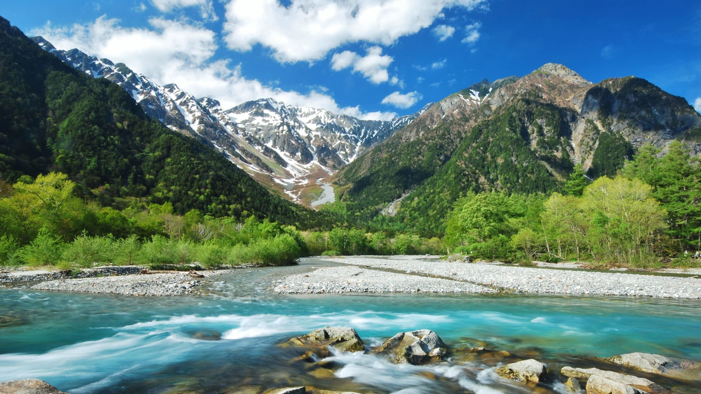

About Kamikōchi
Kamikōchi is a scenic highland valley within the Hida Mountains in the Chūbu region of Japan. It is known for its stunning natural beauty, pristine rivers, and picturesque landscapes.
Experience the tranquility of Kamikōchi surrounded by the Japanese Alps, with opportunities for hiking, wildlife viewing, and enjoying the serene beauty of the Taisho Pond.